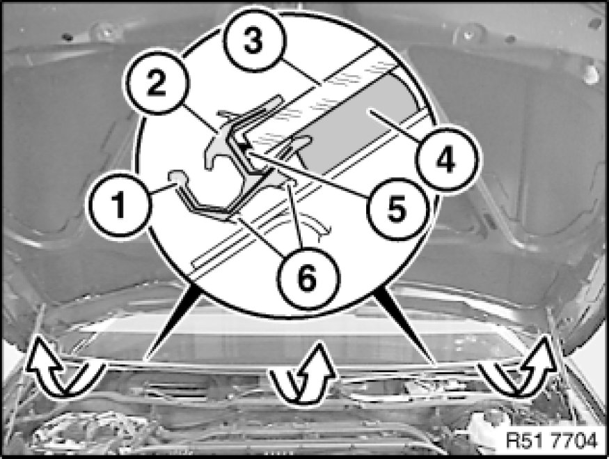
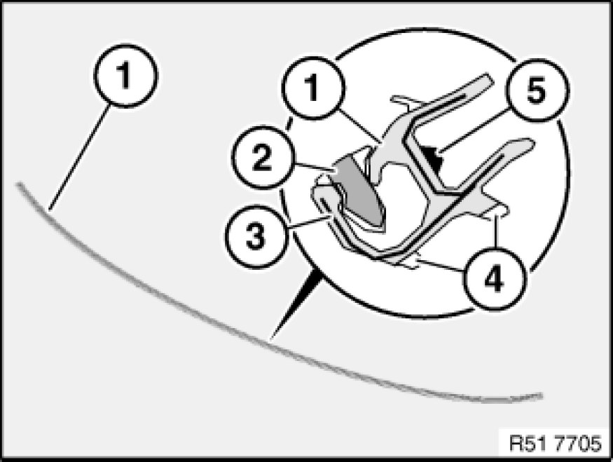

Removing and Installing/Replacing Retaining Strip for Cowl Panel Cover
51 31 ... - Removing and installing/replacing retaining strip for cowl panel cover

Necessary preliminary tasks:
- Remove cover Service and Repair for cowl panel

Important!
Retaining strip (2) has an aluminium profile insert (1).
Carefully wind out retaining strip (2) (windscreen breakage).
4 - Glue bead
5 - Pinched butyl
6 - Contact surfaces

Installation:
Clean cutout.
Pay attention to centre marking on retaining strip (1) and windscreen.
Insert positioner (2) for retaining strip (1) must be removed after it has been fitted on the windscreen but before the windscreen itself is installed.
Replacement of retaining strip without windscreen removal:
If adhesive has managed to get onto retaining strip (1), this area must be cut out partially.
To facilitate installation, coat and body cutout with water.
Replacement of retaining strip with removed or new windscreen:
Fit rubber frame (1).
3 - Aluminum strip
4 - Contact surfaces
5 - Butyl